PrestaShop-Modul · Version 1.6.0
Amazon Marketplace Pro
Benutzerhandbuch: was das Modul leistet, wie jede Ansicht funktioniert und wie es ohne Aufsicht läuft.
Amazon Marketplace Pro verbindet einen PrestaShop-Shop über Amazons offizielle Selling Partner API mit Amazon, sodass Sie Ihr Amazon-Geschäft aus dem Back Office heraus führen, das Sie bereits nutzen. Das Modul deckt den gesamten Verkaufszyklus ab:
Das Modul läuft vollständig in Ihrer PrestaShop-Installation und ruft Amazon direkt von Ihrem Server aus auf. Produkt-, Bestell- und Käuferdaten werden ausschließlich in Ihrer eigenen Datenbank gespeichert.
IntelliPresta betreibt einen kleinen Dienst unter intellipresta.com. Er erledigt zwei Dinge und sonst nichts:
| PrestaShop | 1.6 bis 9. Die Oberfläche passt sich an die Back-Office-Designs von 1.6, 1.7–9 und der „Basic Edition“ an. Multistore wird unterstützt: Jeder Shop verbindet sich mit seinem eigenen Amazon-Konto (Abschnitt 11.5). |
| Amazon-Konto | Ein aktives Konto mit dem Tarif Professional auf einem der 23 unterstützten Marktplätze (Europa, Nordamerika, Brasilien, Naher Osten, Afrika, Japan, Australien, Singapur, Indien). |
| Hosting | PHP mit cURL. Eine Crontab wird empfohlen; bietet Ihr Hosting keine, übernimmt das der IntelliPresta-Scheduler. Die optionale Funktion für Käuferantworten benötigt die PHP-Erweiterung IMAP. |
| Katalog | Jedes Produkt und jede Kombination braucht eine Artikelnummer (SKU) und einen Barcode (EAN oder UPC). Das Werkzeug Katalogprüfung (Abschnitt 11.3) findet die Produkte, bei denen etwas fehlt. |
Danach ist die übliche Reihenfolge: die Artikelnummern im Katalog prüfen (11.3), für jede Produktfamilie ein Angebotsprofil anlegen (5.4), den zweistufigen Abgleich unter Katalog > Produkte ausführen (5.1) und die geplanten Aufgaben alles aktuell halten lassen.
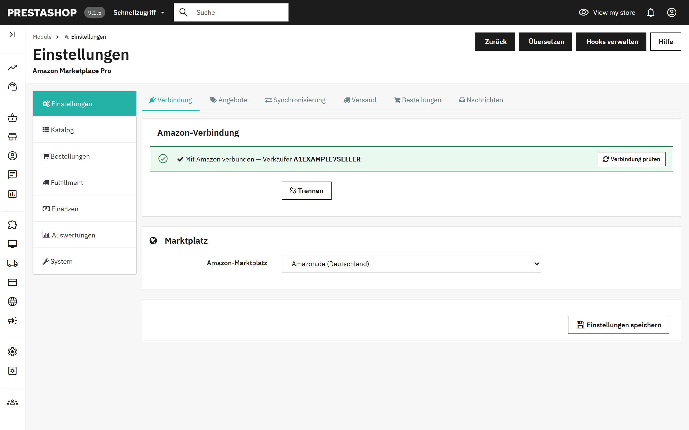
Die Konfigurationsseite hat eine Seitenleiste mit sieben Gruppen. Jede Gruppe hat oben Unterregisterkarten, und jede Unterregisterkarte enthält einen oder mehrere Bereiche. Das Modul merkt sich, in welcher Gruppe Sie waren, wenn Sie neu laden oder speichern.
| Gruppe | Unterregisterkarten | Wofür |
|---|---|---|
| Einstellungen | Verbindung, Angebote, Synchronisierung, Versand, Bestellungen, Nachrichten | Alles, was Sie einmalig einrichten. Eine einzige Schaltfläche Einstellungen speichern speichert alle sechs Unterregisterkarten zusammen. |
| Katalog | Produkte, Profile, Aufschläge und Regeln, Produktregeln, Warteschlange, Verwaiste | Produkte zu Amazon bringen und die beiden Kataloge auf demselben Stand halten. |
| Bestellungen | Bestellungen, Ausstehende Bestellungen, Retouren | Amazon-Bestellungen übernehmen, Bestandsengpässe, Retouren und Käufernachrichten bearbeiten. |
| Fulfillment | FBA, Mehrere Konten | Von Amazon versandter Bestand, Multi-Channel-Fulfillment, weitere Marktplätze. |
| Finanzen | Repricing, Gebühren, Aktionen | Wettbewerbsfähige Preise, Amazon-Gebühren, Aktionen. |
| Auswertungen | Berichte | Amazon-Berichte anfordern und herunterladen. |
| System | Automatisierung, Werkzeuge, Protokolle | Der Zeitplan, Katalogwerkzeuge, Löschungen, Feed-Inhalte, das Aktivitätsprotokoll. |
Die Gruppe Einstellungen ist ein einziges Formular. Ändern Sie beliebige Werte auf einer ihrer sechs Unterregisterkarten und klicken Sie dann unten auf Einstellungen speichern.
Zeigt, ob der Shop verbunden ist und mit welchem Verkäufer. Mit Amazon verbinden startet den Bestätigungsablauf in Seller Central; Trennen löscht die gespeicherte Autorisierung. Wählen Sie den Marktplatz vor dem Verbinden, denn die Zustimmungsseite hängt von ihm ab.
Das grüne Banner bedeutet nur, dass eine Verbindung gespeichert ist. Verbindung prüfen im Banner zeigt, dass sie noch funktioniert: Die Prüfung verbindet sich mit Amazon, liest Ihre letzten Bestellungen und sagt in einfachen Worten, dass alles funktioniert oder was zu tun ist. Führen Sie sie nach dem Verbinden aus und immer dann, wenn eine Synchronisierung einen Autorisierungsfehler meldet. Abschnitt 13 listet die Ergebnisse auf.
Amazon-Marktplatz. Die Amazon-Website, auf der dieser Shop verkauft. Weitere Marktplätze fügen Sie unter Fulfillment > Mehrere Konten hinzu (Abschnitt 8).
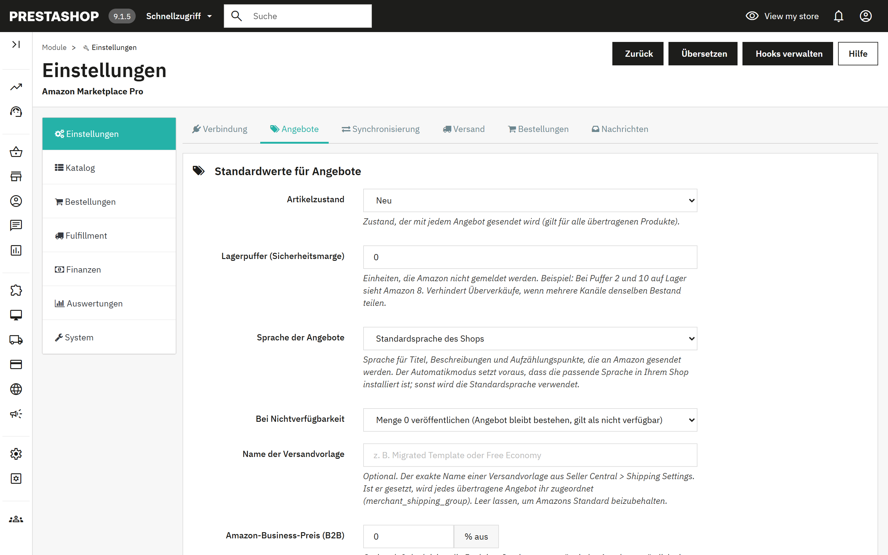
| Artikelzustand | Zustand, der mit jedem Angebot gesendet wird: Neu, die vier „Gebraucht“-Stufen oder Generalüberholt. Ein Produkt kann ihn auf seinem Amazon-Tab überschreiben (Abschnitt 6). |
| Lagerpuffer | Einheiten, die Amazon nicht gemeldet werden. Bei Puffer 2 und 10 auf Lager sieht Amazon 8. Verhindert Überverkäufe, wenn mehrere Kanäle denselben Bestand teilen. |
| Sprache der Angebote | Sprache von Titeln, Beschreibungen und Aufzählungspunkten. „Automatisch“ folgt dem Marktplatz (Deutschland erhält Deutsch, Frankreich Französisch) und setzt voraus, dass diese Sprache im Shop installiert ist; andernfalls wird die Standardsprache des Shops verwendet. |
| Bei Nichtverfügbarkeit | Menge 0 veröffentlichen (das Angebot bleibt bestehen und gilt als nicht verfügbar) oder das Angebot bei Amazon löschen. |
| Name der Versandvorlage | Optional. Der exakte Name einer Versandvorlage aus Seller Central; jedes Angebot wird ihr zugeordnet. Bereiche nach Preis oder Gewicht legen Sie unter Versand fest (4.4). |
| Amazon-Business-Preis (B2B) | Optionaler prozentualer Abschlag auf Ihren normalen Preis, der als Geschäftspreis für Amazon-Business-Käufer gesendet wird. 0 deaktiviert die Funktion. |
| B2B-Mengenrabatte aus Gruppe | Eine PrestaShop-Kundengruppe, deren Sonderpreise mit einer Mindestmenge über 1 zu Amazon-Business-Mengenstaffeln werden, bis zu fünf. |
| Quelle der SKU | Welches PrestaShop-Feld zur Amazon-SKU wird: Artikelnummer, EAN oder Lieferantenartikelnummer. Produkte mit leerem Quellfeld werden nicht exportiert. |
| SKU-Präfix | Wird der SKU mit einem Bindestrich vorangestellt: Das Präfix AMZ ergibt AMZ-REF123. |
| Preisspanne, Mindestmenge | Nur Produkte exportieren, deren Endpreis in der Spanne liegt und deren Bestand mindestens die Mindestmenge erreicht. 0 deaktiviert die jeweilige Grenze. |
| Sonderpreise verwenden | PrestaShop-Sonderpreise vor dem Aufschlag anwenden, wahlweise die einer bestimmten Kundengruppe. |
| E-Mail für Berichte | Geplante Läufe senden einen kurzen Bericht an diese Adresse. Leer bedeutet: keine Berichte. |
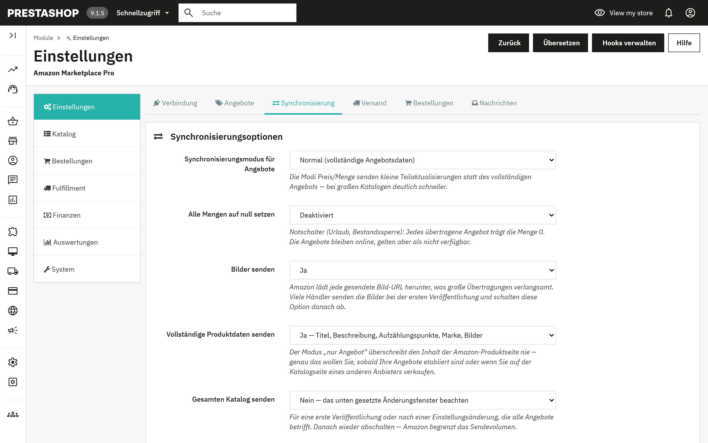
| Synchronisierungsmodus für Angebote | „Normal“ sendet die vollständigen Angebotsdaten. „Nur Preis“ und „Nur Menge“ senden kleine Teilaktualisierungen, bei großen Katalogen deutlich schneller. |
| Alle Mengen auf null setzen | Notschalter für Urlaub oder eine Bestandssperre. Die Angebote bleiben online und gelten als nicht verfügbar. |
| Bilder senden | Amazon lädt jede gesendete Bild-URL herunter, was große Übertragungen verlangsamt. Viele Händler senden die Bilder bei der ersten Veröffentlichung und schalten diese Option danach ab. |
| Vollständige Produktdaten senden | „Ja“ sendet Titel, Beschreibung, Aufzählungspunkte, Marke und Bilder. „Nein“ sendet nur das Angebot (Preis und Bestand) und überschreibt nie den Inhalt der Produktseite. Wählen Sie „Nein“, sobald Ihre Angebote etabliert sind oder wenn Sie auf der Katalogseite eines anderen Anbieters verkaufen. |
| Gesamten Katalog senden | Ignoriert das Änderungsfenster, für eine erste Veröffentlichung oder nach einer Einstellung, die alle Angebote betrifft. Schalten Sie die Option danach wieder ab. |
| Nur Produkte mit ASIN exportieren | Beschränkt Übertragungen auf Produkte, die bereits einer Amazon-Produktseite zugeordnet sind. |
| Export auf N Zeilen begrenzen | Begrenzt jeden Übertragungsstapel auf 100 bis 1500 Zeilen. |
| Das PrestaShop-Feld EAN-13 behandeln als | Wählen Sie UPC, wenn Sie zwölfstellige US-Barcodes im EAN-Feld speichern. |
| Nur Produkte exportieren, die geändert wurden in den letzten | Das Änderungsfenster: 1 bis 24 Stunden. Bei großen Katalogen dringend empfohlen. Produkte, die von Regeländerungen berührt wurden, werden über die Warteschlange einbezogen (5.6). |
| Warteschlangeneinträge löschen nach | Aufbewahrungsdauer gesendeter Warteschlangeneinträge: 1, 7 oder 15 Tage. |
| Preisrundung | Auf den nächsten Cent, „Intelligent“ auf ,99 aufrunden oder ganze Zahlen. Wird nach den Aufschlägen auf jeden exportierten Preis angewendet. |
| Aktionspreise senden | Ein Sonderpreis mit Start- und Enddatum wird zu einer Amazon-Aktion mit demselben Zeitfenster, sodass Aktionen im Voraus übertragen werden können. |
| Listenpreis senden | Sendet den Preis vor Rabatt als durchgestrichenen Listenpreis, sofern er über dem exportierten Preis liegt. |
| Vorbestellung | Produkte mit einem Verfügbarkeitsdatum in der Zukunft werden mit diesem Wiederauffülldatum eingestellt. |
| Zuordnung der Zustände | Ordnet die drei Zustände von PrestaShop Amazons feinerer Liste zu. |
| Format des Angebotstitels | Produktname unverändert oder „Marke - Produktname - Merkmale“ gemäß Amazon-Richtlinie. Die Marke wird ausgelassen, wenn der Name schon mit ihr beginnt. |
| Zustandshinweise | Freitext, der bei den Zuständen „Gebraucht“ und „Generalüberholt“ mitgesendet wird. |
Drei Schalter lassen das Modul auf Ereignisse in PrestaShop reagieren, statt auf den nächsten geplanten Lauf zu warten: Preis und Bestand übertragen, wenn ein Produkt gespeichert wird; den Versand samt Sendungsnummer bestätigen, wenn eine Bestellung als versandt markiert wird; und bei Amazon stornieren, wenn eine Amazon-Bestellung in PrestaShop storniert wird.
Versandvorlagen nach Preis- oder Gewichtsbereich. Weisen Sie je nach Produktpreis oder -gewicht unterschiedliche Versandvorlagen aus Seller Central zu. Fügen Sie Bereiche mit einem Minimum (einschließlich), einem Maximum (ausschließlich, 0 für offen) und dem Vorlagennamen hinzu. Ist die Option deaktiviert oder passt kein Bereich, gilt die einzelne Vorlage aus den Standardwerten für Angebote.
Zuordnung der Versanddienstleister. Welcher Amazon-Carrier-Code bei der Versandbestätigung für den jeweiligen PrestaShop-Versanddienstleister gemeldet wird. Nicht zugeordnete Versanddienstleister werden anhand des Namens erkannt.
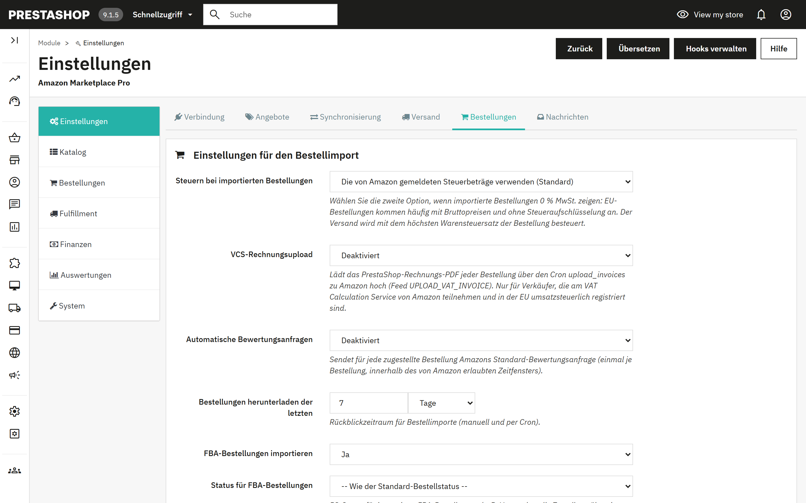
| Steuern bei importierten Bestellungen | Die von Amazon gemeldeten Steuerbeträge verwenden oder Ihre PrestaShop-Steuerregeln anwenden, wobei Amazon-Preise als Bruttopreise gelten. Wählen Sie die zweite Option, wenn importierte EU-Bestellungen 0 % MwSt. zeigen. |
| VCS-Rechnungsupload | Lädt das PrestaShop-Rechnungs-PDF jeder Bestellung zu Amazon hoch. Nur für Verkäufer, die am VAT Calculation Service von Amazon teilnehmen. Läuft über die Aufgabe Rechnungen hochladen. |
| Automatische Bewertungsanfragen | Sendet Amazons Standard-Bewertungsanfrage einmal je zugestellter Bestellung, innerhalb des von Amazon erlaubten Zeitfensters, über die Aufgabe Bewertungen anfordern. |
| Bestellungen herunterladen der letzten | Rückblickzeitraum für manuelle und geplante Importe, in Tagen oder Stunden. |
| FBA-Bestellungen importieren, Status für FBA-Bestellungen, Status für versandte Bestellungen | Ob von Amazon versandte Bestellungen importiert werden und welchen PrestaShop-Status sie und bereits versandte Bestellungen erhalten. |
| Bestellpositionen zuordnen über | Artikelnummer oder produktbezogene abweichende SKU (empfohlen) oder PrestaShop-IDs, wenn Ihre Amazon-SKUs aus Produkt- und Kombinations-IDs gebildet wurden. |
| Beim Zuordnen von Produkten die ASIN bevorzugen | Zuerst über die ASIN und dann über die SKU zuordnen, anhand der Zuordnungstabelle, die durch Synchronisierungen und „ASINs über EAN zuordnen“ entsteht. |
| Anonymisierte E-Mail-Adresse für Kunden verwenden | Amazon-Relay-Adressen laufen ab; eine synthetische Adresse verhindert unzustellbare Shop-E-Mails. Die Käuferkommunikation über Amazon funktioniert weiterhin. |
| Löschung der Käuferdaten, Käuferdaten löschen nach | Siehe Abschnitt 12. |
| Kundengruppe für Amazon-Käufer | Die Gruppe, die durch Importe angelegte Kunden erhalten. |
| Externer Warenkorb, Reservierung freigeben nach | Bestand für noch nicht zahlungspflichtige Amazon-Kaufvorgänge reservieren; nach Ablauf der Karenzzeit zurückgeben, falls die Bestellung nie zahlungspflichtig wird. Siehe 7.3. |
| Bestellungen ohne ausreichenden Bestand | Die PrestaShop-Bestellung trotzdem anlegen oder sie zur Prüfung unter Ausstehende Bestellungen parken. |
| Standard-Versanddienstleister, Standard-Bestellstatus | Werden für importierte Bestellungen verwendet, wenn nichts Spezifischeres greift. |
Amazon nennt die Liefergeschwindigkeit, die es dem Käufer zugesagt hat; ordnen Sie jede Geschwindigkeit einem PrestaShop-Versanddienstleister zu. Erweiterte Statusregeln geben bestimmten Bestellungen einen eigenen Status, etwa Prime-Bestellungen einen Status, den das Lager nicht übersehen kann, oder FBA-Bestellungen direkt „Versandt“. Die Regeln werden von oben nach unten geprüft, und die erste Übereinstimmung gewinnt. Rechnung per E-Mail sendet das PrestaShop-Rechnungs-PDF, auf Wunsch zusammen mit einem Anhang wie Ihren AGB, sobald eine Bestellung einen gewählten Status erreicht.
Amazon bietet keine API, um Käuferantworten zu lesen; sie kommen per E-Mail an Ihre Verkäuferadresse. Verweisen Sie das Modul auf dieses Postfach (IMAP-Host, Port, Benutzer, Kennwort, Ordner, SSL), dann legt es jede Nachricht, die eine Amazon-Bestellung nennt, im Kundenservice von PrestaShop bei der richtigen Bestellung ab. Verwenden Sie ein eigenes Postfach oder ein App-Passwort mit reinem Lesezugriff. Käuferantworten jetzt abrufen liest ungelesene Nachrichten; die Aufgabe Käufernachrichten abrufen erledigt das zeitgesteuert.
Auf der Unterregisterkarte Produkte wechseln Produkte zwischen den beiden Katalogen. Beide Richtungen funktionieren gleich: Zuerst liest und vergleicht ein Abgleich und zeigt eine Tabelle nach SKU; danach schreibt ein zweiter Schritt. Bis zum zweiten Schritt wird nichts geändert.
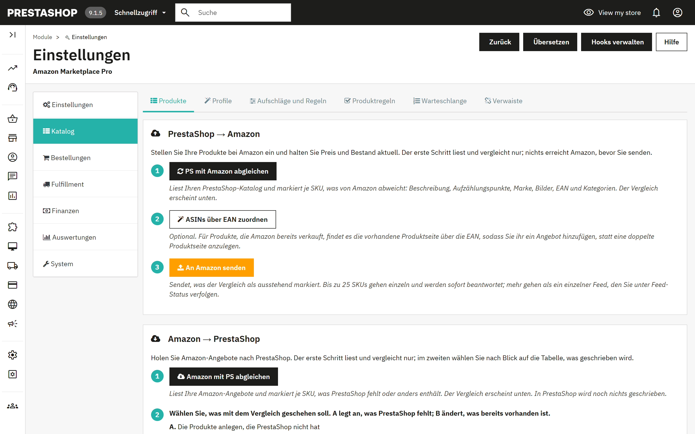
Feed-Status. Eine Übertragung mit mehr als 25 SKUs geht als ein Feed. Feed-Status prüfen fragt bei Amazon nach, ob er abgeschlossen ist, und zeigt je Feed die Zahl der angenommenen Einträge, Fehler und Warnungen. Das exakte JSON jedes Feeds wird aufbewahrt und kann unter System > Werkzeuge heruntergeladen werden.
Kategoriezuordnung. Der ältere, einfachere Weg, Amazon mitzuteilen, welchen Typ ein Produkt hat: ein Amazon-Produkttyp und ein optionaler Browse-Node je PrestaShop-Kategorie, dazu optionale zusätzliche Attribute als JSON. Produkte in einer zugeordneten Kategorie senden die vollständigen Angebotsdaten; Produkte in einer nicht zugeordneten Kategorie senden nur das Angebot. Angebotsprofile (5.4) erfüllen dieselbe Aufgabe mit Amazons eigenem Attributformular und haben Vorrang; die Kategoriezuordnung bleibt als Rückfalloption für Kategorien ohne Profil erhalten.
Amazon-Produktliste. Eine schreibgeschützte Ansicht dessen, was Amazon für Ihr Konto zurückgibt.
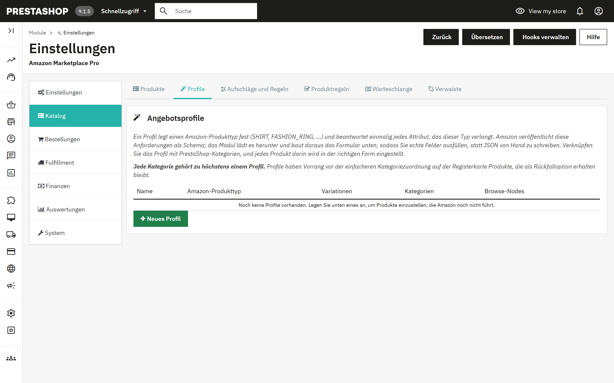
Ein Profil legt einen Amazon-Produkttyp fest (SHIRT, FASHION_RING und so weiter) und beantwortet einmalig jedes Attribut, das dieser Typ verlangt. Amazon veröffentlicht diese Anforderungen als Schema; das Modul lädt es herunter und baut daraus ein Formular, sodass Sie echte Felder ausfüllen, statt JSON zu schreiben. Verknüpfen Sie das Profil mit PrestaShop-Kategorien, und jedes Produkt darin wird in der richtigen Form eingestellt. Jede Kategorie gehört zu höchstens einem Profil.
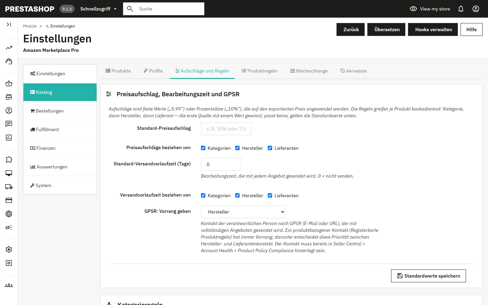
Aufschläge sind feste Werte („5.99“) oder Prozentsätze („10%“), die auf den exportierten Preis angewendet werden. Die Regeln greifen je Produkt kaskadierend: Kategorie, dann Hersteller, dann Lieferant; die erste Quelle mit einem Wert gewinnt, und passt keine, gelten die Standardwerte. Dieselbe Kaskade legt die Bearbeitungszeit und den GPSR-Kontakt fest.
Die Tabellen Kategorieregeln, Herstellerregeln und Lieferantenregeln enthalten je Eintrag den Preisaufschlag, die Versandvorlaufzeit, die GPSR-E-Mail oder den GPSR-Link und einen Synchronisierungsschalter (Ja/Nein). Die Herstellertabelle enthält zusätzlich das Ursprungsland. Beim Speichern werden die betroffenen Produkte in die Warteschlange gestellt, damit die nächste Delta-Synchronisierung sie erneut sendet.
Produktregeln nehmen einzelne Produkte von der Amazon-Synchronisierung aus oder geben einem Produkt einen eigenen GPSR-Kontakt, der die Hersteller- und Lieferantenkontakte überschreibt. Dasselbe und mehr bietet der Amazon-Tab jedes Produkts (Abschnitt 6).
Warteschlange listet Produkte, die in PrestaShop geändert oder von Regeländerungen berührt wurden. Bei aktivem Änderungsfenster gehen aktive Einträge auch dann in die nächste Synchronisierung ein, wenn das Produkt selbst nicht kürzlich geändert wurde. Gesendete Einträge werden inaktiv und nach der eingestellten Aufbewahrungsdauer bereinigt. Der Bereich bietet die Aktionen Alle aktivieren, Alle deaktivieren, Abgelaufene Einträge bereinigen und Alle entfernen.
Verwaiste listet Amazon-Angebote, die keinem verkäuflichen PrestaShop-Produkt mehr entsprechen, weil das Produkt gelöscht oder deaktiviert wurde oder sich seine SKU geändert hat. Führen Sie zuerst „Amazon mit PS abgleichen“ aus, damit die Liste Ihren tatsächlichen Bestand zeigt, und korrigieren Sie dann die Produkte oder löschen Sie die Angebote mit dem Werkzeug in 11.3.
Jede Produktseite in PrestaShop erhält einen Tab Amazon Marketplace Pro. Seine Einstellungen gelten nur für dieses Produkt und haben Vorrang vor dem Angebotsprofil, den Kategorie-, Hersteller- und Lieferantenregeln sowie den globalen Einstellungen. Lassen Sie ein Feld leer, um den Wert zu erben.
| Dieses Produkt mit Amazon abgleichen | Ja, oder das Produkt von jedem Export ausschließen. |
| Preis senden / Menge senden | Entfernen Sie eines der Häkchen, damit der jeweilige Wert bei Amazon unverändert bleibt, zum Beispiel wenn Sie Ihre Preise direkt bei Amazon anpassen. |
| Bestand erzwingen | Die tatsächliche Menge senden, immer auf Lager (999) oder immer nicht verfügbar (0). |
| Abweichender Preis | Wird anstelle des Shop-Preises gesendet; Aufschläge und Preisregeln entfallen. |
| Abweichende SKU | Für ein Produkt, das in Ihrem Amazon-Bestand bereits unter einer anderen Verkäufer-SKU existiert. Wird für Angebotsaktualisierungen und die Bestellzuordnung genutzt. |
| ASIN | Hängt das Angebot an eine bekannte Amazon-Produktseite, statt Amazon die Zuordnung über den Barcode zu überlassen. |
| Versand durch Amazon | Ob Sie selbst versenden (MFN) oder Amazon versendet (AFN). |
| Bearbeitungszeit, Versandvorlage, Browse-Node, Abweichende Marke | Produktbezogene Fassungen der Werte aus Profil und globalen Einstellungen. |
| Zustand, Zustandshinweis | Überschreibt den globalen Standardwert, mit Amazons vollständiger Liste der Zustände. |
| Wichtigste Produktmerkmale | Ein Aufzählungspunkt je Zeile, bis zu fünf mit je 500 Zeichen. Bleibt das Feld leer, werden sie aus der Kurzbeschreibung erzeugt. |
| GPSR-Kontakt | E-Mail oder URL der verantwortlichen Person; überschreibt den Hersteller- und Lieferantenkontakt. |
| Geschenkoptionen, Transparency-Code | Geschenkverpackung und Geschenknachricht anbieten; der Transparency-Code des Produkts, falls Sie am Programm teilnehmen. |
| Diese Einstellungen übertragen auf | Beim Speichern dieselben Werte auf alle Produkte derselben Standardkategorie, desselben Herstellers oder desselben Lieferanten oder auf alle aktiven Produkte anwenden. Identitätsfelder (SKU, ASIN, Preis, Transparency-Code) werden nie übertragen. |
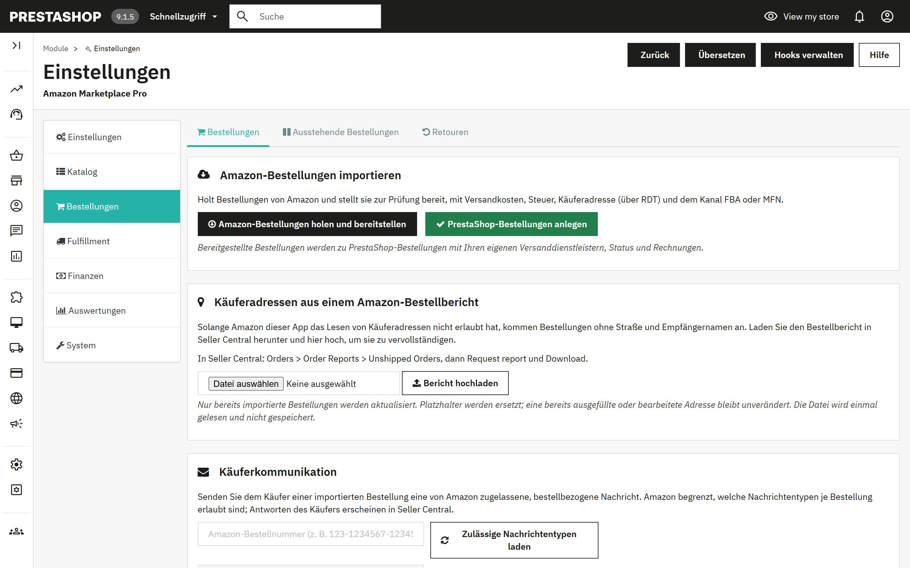
Der Import erfolgt wie beim Katalog in zwei Schritten, damit Sie prüfen können, bevor etwas angelegt wird.
Die geplanten Aufgaben Bestellungen importieren und PrestaShop-Bestellungen anlegen erledigen dieselben zwei Schritte ohne Aufsicht, standardmäßig alle 15 Minuten. Wird eine Bestellung in PrestaShop als versandt markiert und ist der Hook aus 4.3 aktiv, bestätigt das Modul Amazon den Versand mit der Sendungsnummer und dem zugeordneten Carrier-Code.
Das direkte Abrufen von Name, Adresse und Telefonnummer des Käufers bei Amazon folgt in Kürze. Bis dahin erhalten Sie diese Angaben, indem Sie den Bestellbericht in Seller Central herunterladen und in das Modul hochladen. Solange Sie das nicht tun, zeigt die Bestellung als Kunden „Amazon Buyer“ und als Straße „Amazon Marketplace Order“.
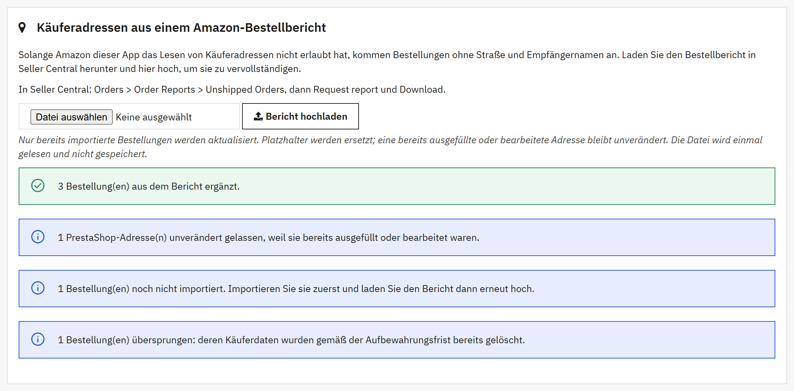
Das Ergebnis zeigt, wie viele Bestellungen ergänzt wurden, wie viele bereits eine vollständige Adresse hatten, wie viele PrestaShop-Adressen unverändert blieben, wie viele Bestellungen noch nicht importiert sind und wie viele übersprungen wurden, weil ihre Käuferdaten bereits gelöscht waren. Für den Upload gelten diese Regeln:
Denselben Bericht erneut hochzuladen, schadet nicht: Jede Bestellung wird dann als bereits vollständig gemeldet. Aus einem Bericht ergänzte Angaben werden nach Ablauf der Aufbewahrungsfrist zusammen mit den übrigen Käuferdaten gelöscht (Abschnitt 12).
Ausstehende Bestellungen enthält Amazon-Bestellungen, die keine PrestaShop-Bestellungen werden konnten, weil einem Produkt der Bestand fehlt. Füllen Sie den Bestand auf und starten Sie „PrestaShop-Bestellungen anlegen“ erneut, erzwingen Sie die Bestellung mit Trotzdem anlegen oder entfernen Sie sie.
Reservierter Bestand (externer Warenkorb) listet Einheiten, die für noch nicht zahlungspflichtige Amazon-Kaufvorgänge zurückgehalten werden. Amazon zeigt einen laufenden Kaufvorgang als Bestellung im Status „Pending“; ist der externe Warenkorb aktiv (4.5), nimmt das Modul die betreffenden Einheiten sofort aus dem PrestaShop-Bestand, damit kein anderer Kanal sie verkaufen kann, übergibt sie, sobald die Bestellung zahlungspflichtig wird, und gibt sie nach Ablauf der Karenzzeit zurück, falls das nie geschieht. Die Aufgabe Externe Warenkörbe auflösen übernimmt diese Abwicklung.
Retouren von Amazon importieren holt Retouren und Stornierungen; Ausstehende Retouren verarbeiten erstellt entsprechend PrestaShop-Gutschriften oder storniert PrestaShop-Bestellungen. Die Tabelle Retourenverlauf zeigt jeden Vorgang mit Typ, Erstattungsbetrag, PrestaShop-Bestellung und Gutschrift. Die Aufgaben Retouren importieren und Retouren verarbeiten automatisieren beides.
Geben Sie eine Amazon-Bestellnummer ein und klicken Sie auf Zulässige Nachrichtentypen laden; Amazon begrenzt, welche Nachrichtentypen je Bestellung erlaubt sind. Schreiben Sie die Nachricht und senden Sie sie, oder klicken Sie auf Bewertung anfordern, um Amazons Standard-Bewertungsanfrage zu senden, die einmal je Bestellung 5 bis 30 Tage nach Zustellung erlaubt ist. Antworten kommen per E-Mail und lassen sich mit den Einstellungen unter Nachrichten (4.6) im Kundenservice ablegen.
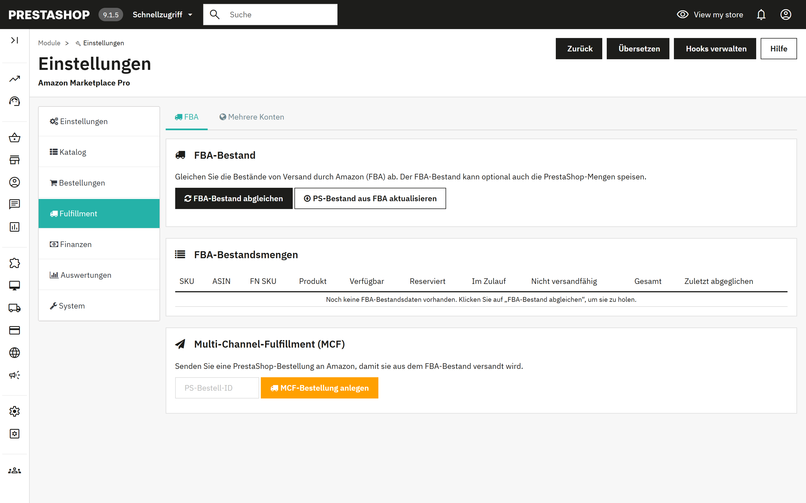
FBA-Bestand abgleichen lädt den Bestand herunter, den Amazon für Sie lagert: verfügbar, reserviert, im Zulauf und nicht versandfähig, je SKU. PS-Bestand aus FBA aktualisieren schreibt die verfügbare Menge in PrestaShop, für Händler, deren Bestand in Amazons Lagern liegt. Die Aufgabe FBA-Bestandsabgleich führt den Download standardmäßig stündlich aus.
Geben Sie eine PrestaShop-Bestell-ID ein und klicken Sie auf MCF-Bestellung anlegen, damit Amazon eine PrestaShop-Bestellung aus Ihrem FBA-Bestand versendet.
Fügen Sie weitere Amazon-Marktplätze hinzu, jeweils mit eigener oder der Haupt-Verkäufer-ID, und wählen Sie je Marktplatz, ob Bestellungen, Produkte und Bestand synchronisiert werden. Die Aufgaben Bestellungen importieren, alle Marktplätze und Produktsynchronisierung, alle Marktplätze decken sie ab. Der Hauptmarktplatz aus den Einstellungen ist immer aktiv.
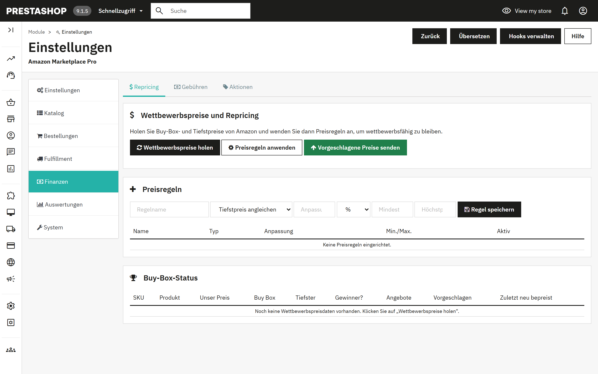
Drei Schaltflächen, in dieser Reihenfolge: Wettbewerbspreise holen lädt für jedes Ihrer Angebote den Buy-Box-Preis, den Tiefstpreis und die Zahl der Angebote herunter; Preisregeln anwenden berechnet je SKU einen vorgeschlagenen Preis; Vorgeschlagene Preise senden sendet die Preise, die Sie freigeben. Die Tabelle Buy-Box-Status zeigt Ihren Preis im Vergleich zum Markt und ob Sie die Buy Box halten.
Eine Preisregel hat einen Typ (Tiefstpreis angleichen oder unterbieten, Buy Box angleichen oder unterbieten oder feste Marge), eine Anpassung als Prozentsatz oder fester Betrag sowie einen Mindest- und Höchstpreis als Leitplanken. Die Aufgabe Repricing-Durchlauf führt Abrufen und Anwenden zeitgesteuert aus; das Senden bleibt manuell, sofern Sie es dort nicht aktivieren.
Bestellgebühren holen ruft Verkaufsprovisionen, FBA-Gebühren und Provisionen je Bestellung über Amazons Finances-API ab, sodass die tatsächliche Marge jedes Verkaufs sichtbar wird. Die Übersicht gruppiert sie nach Gebührenart. Die Aufgabe Gebühren holen läuft standardmäßig alle sechs Stunden.
Importieren Sie die auf Amazon-Bestellungen angewendeten Aktionen, exportieren Sie PrestaShop-Warenkorbregeln zur Nachverfolgung oder legen Sie PrestaShop-Warenkorbregeln aus Amazon-Aktionen an. Die Verlaufstabelle zeigt jede Aktion mit ihrer Richtung.
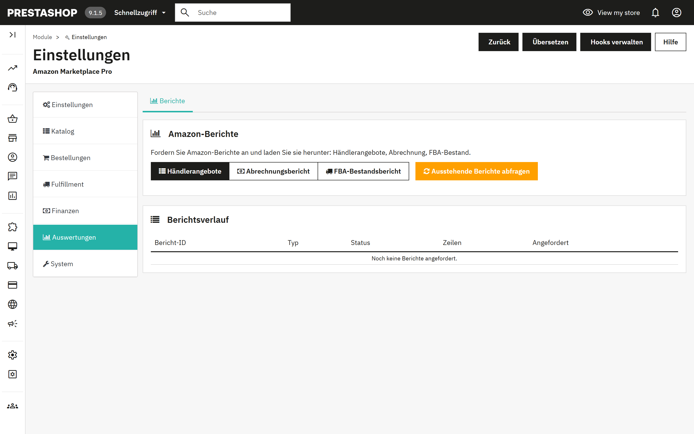
Fordern Sie bei Amazon die Berichte Händlerangebote, Abrechnungsbericht oder FBA-Bestandsbericht an. Amazon erstellt Berichte im Hintergrund; Ausstehende Berichte abfragen sucht nach fertigen Berichten und lädt sie herunter, und die Verlaufstabelle zeigt Status und Zeilenzahl. Die Aufgabe Berichte abfragen fragt standardmäßig alle 30 Minuten ab.
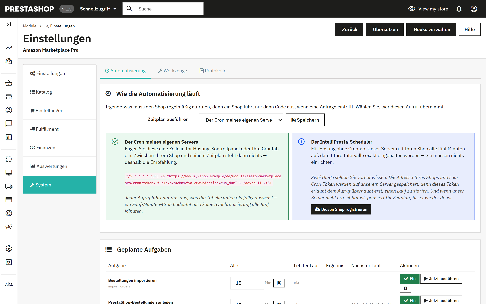
Ein Shop führt nur dann Code aus, wenn eine Anfrage eintrifft; irgendetwas muss ihn also regelmäßig aufrufen. Wählen Sie, wer diesen Aufruf übernimmt:
| Modus | So funktioniert es | Wählen Sie ihn, wenn |
|---|---|---|
| Der Cron meines eigenen Servers (Standard, empfohlen) | Fügen Sie die angezeigte Zeile im Kontrollpanel Ihres Hostings oder in Ihrer Crontab ein. Sie ruft Ihren Shop alle fünf Minuten auf; jeder Aufruf führt nur die fälligen Aufgaben aus. Zwischen Ihrem Shop und seinem Zeitplan steht nichts. | Ihr Hosting eine Crontab oder eine Funktion für geplante Aufgaben bietet, was bei den meisten der Fall ist. |
| Der IntelliPresta-Scheduler | Wählen Sie ihn aus, speichern Sie und klicken Sie dann auf Diesen Shop registrieren. Der IntelliPresta-Server ruft Ihren Shop alle fünf Minuten auf, sodass die Intervalle exakt eingehalten werden, ohne dass Sie etwas einrichten müssen. Die Adresse Ihres Shops und sein Cron-Token werden auf diesem Server gespeichert; ist er nicht erreichbar, pausiert Ihr Zeitplan, bis er wieder da ist. Scheduler nicht mehr verwenden entfernt die Registrierung. | Ihr Hosting keine Crontab bietet oder Sie keine pflegen möchten. Der Shop muss über HTTPS erreichbar sein. |
Die Cron-Zeile hat diese Form; das Modul zeigt Ihre Zeile mit der richtigen Adresse und dem richtigen Token an:
*/5 * * * * curl -s "https://www.your-shop.example/module/amazonmarketplacepro/cron?token=YOUR-TOKEN&action=run_due" > /dev/null 2>&1
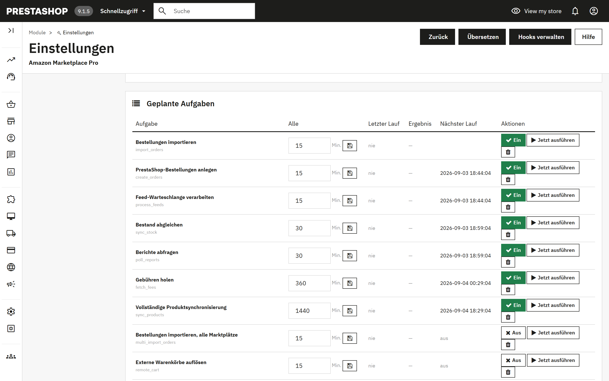
Jede Zeile ist eine Aufgabe mit ihrem Intervall in Minuten, dem Zeitpunkt und Ergebnis des letzten Laufs und dem Zeitpunkt des nächsten Laufs. Ein/Aus schaltet sie um, Jetzt ausführen führt sie sofort aus, und das Papierkorbsymbol entfernt sie. Entfernte Aufgaben lassen sich mit dem Formular unter der Tabelle wieder hinzufügen. Bei Neuinstallationen sind alle Aufgaben vorhanden und ausgeschaltet, damit nichts läuft, bevor Sie es entscheiden.
| Aufgabe | Standard | Funktion |
|---|---|---|
| Bestellungen importieren | 15 Min. | Holt Amazon-Bestellungen im Rückblickzeitraum und stellt sie bereit (7.1, Schritt 1). |
| PrestaShop-Bestellungen anlegen | 15 Min. | Macht aus bereitgestellten Bestellungen PrestaShop-Bestellungen (7.1, Schritt 2). |
| Bestand abgleichen | 30 Min. | Sendet für Produkte im Änderungsfenster die aktuellen Mengen und, sofern der Synchronisierungsmodus sie einschließt, die Preise. |
| Vollständige Produktsynchronisierung | täglich | Liest den PrestaShop-Katalog, vergleicht ihn mit Amazon und sendet ausstehende Angebote (5.1, Schritte 1 und 3). |
| Feed-Warteschlange verarbeiten | 15 Min. | Reicht Angebotsänderungen aus der Warteschlange als Feeds ein und erfasst die Ergebnisse von Amazon. |
| Retouren importieren / Retouren verarbeiten | 60 Min. | Holen Retouren und Stornierungen und erstellen dann Gutschriften oder stornieren Bestellungen (7.4). |
| FBA-Bestandsabgleich | 60 Min. | Lädt die Bestandsmengen herunter, die Amazon lagert (Abschnitt 8). |
| Repricing-Durchlauf | 60 Min. | Holt Wettbewerbspreise und wendet Ihre Regeln an (Abschnitt 9). |
| Gebühren holen | 6 Std. | Erfasst Amazon-Gebühren je Bestellung. |
| Berichte abfragen | 30 Min. | Lädt fertige Berichte herunter (Abschnitt 10). |
| Aktionen abgleichen | 6 Std. | Importiert Aktionen aus Bestellungen. |
| Bestellungen importieren / Produktsynchronisierung, alle Marktplätze | 15 Min. / täglich | Die Fassungen von Bestellimport und Produktsynchronisierung für mehrere Marktplätze. |
| Bewertungen anfordern | täglich | Sendet Bewertungsanfragen für zugestellte Bestellungen, sofern in 4.5 aktiviert. |
| Externe Warenkörbe auflösen | 15 Min. | Übergibt reservierten Bestand oder gibt ihn frei (7.3). |
| Käufernachrichten abrufen | 60 Min. | Liest Käuferantworten aus dem Postfach in den Kundenservice ein (4.6). |
| Rechnungen hochladen | 6 Std. | Lädt Umsatzsteuerrechnungen für Verkäufer hoch, die am VCS teilnehmen. |
| Käuferdaten nach Ablauf der Aufbewahrungsfrist löschen | täglich | Löscht personenbezogene Käuferdaten aus Bestellungen, die älter als die Aufbewahrungsfrist sind (Abschnitt 12). |
Katalogprüfung. Amazon ordnet alles über Artikelnummer und Barcode zu. Produkte, denen eines von beiden fehlt oder die sich eine Artikelnummer mit einem anderen Produkt teilen, lassen sich weder einstellen noch eingehenden Bestellungen zuordnen. Meinen Katalog prüfen listet sie auf.
Editor für Artikelnummern und Barcodes. Exportieren Sie alle Produkte und Kombinationen als CSV, korrigieren Sie Artikelnummern und Barcodes in einer Tabellenkalkulation und laden Sie die Datei wieder hoch. Geschrieben werden nur Artikelnummer, EAN, UPC und Lieferantenartikelnummer. Dieser Vorgang ändert Ihren PrestaShop-Katalog direkt und lässt sich nicht rückgängig machen; sichern Sie zuerst, und erledigen Sie das vor der Veröffentlichung, sonst entstehen doppelte SKUs bei Amazon.
Angebote bei Amazon löschen. Findet Angebote für Produkte, die Sie nicht mehr verkaufen, ob gelöscht, deaktiviert oder für Amazon abgeschaltet, und lässt Sie die Liste prüfen, bevor Sie die ausgewählten löschen. Das Löschen entfernt das Angebot samt seiner Historie bei Amazon und ist nicht umkehrbar. Um den Verkauf nur vorübergehend einzustellen, veröffentlichen Sie stattdessen die Menge 0 (4.2).
Inhalte der gesendeten Feeds. Das exakte JSON, das für jeden Feed an Amazon ging, zum Herunterladen nach Feed-ID. Der Amazon-Support fragt danach, wenn ein Angebot aus einem Grund abgelehnt wird, den der Bericht nicht erklärt.
Die letzten 50 Einträge des Aktivitätsprotokolls des Moduls, mit Datum, Stufe, Quelle und Meldung. Fehler sind hervorgehoben. Hier sehen Sie als Erstes nach, wenn eine geplante Aufgabe „Fehlgeschlagen“ zeigt.
Wenn PrestaShop mehr als einen Shop betreibt, arbeitet das Modul für jeden Shop getrennt. Wählen Sie den Shop in der Shop-Auswahl oben im Back-Office und öffnen Sie dann das Modul; seine Seite zeigt den Namen des Shops unter dem Titel.
| Bereich | Bei mehreren Shops |
|---|---|
| Amazon-Verbindung | Jeder Shop verbindet sich über Mit Amazon verbinden mit seinem eigenen Amazon-Verkäuferkonto. Ein Verkäuferkonto kann für denselben Marktplatz nur mit einem Shop verbunden sein, sodass zwei Shops nie dieselben Bestellungen importieren. |
| Bestellungen, Produkte, Bestand und Preise | Jeder Shop importiert seine eigenen Amazon-Bestellungen, legt sie in diesem Shop an und sendet nur seine eigenen Produkte, Bestände und Preise. |
| Automatisierung | Jeder Shop hat seinen eigenen Zeitplan, seine eigene Cron-Zeile und sein eigenes Token (11.1). Tragen Sie je Shop eine Cron-Zeile ein oder registrieren Sie jeden Shop beim IntelliPresta-Scheduler. |
| Profile, Kategoriezuordnungen, Versandvorlagen, Preisregeln und Produktregeln | Werden von allen Shops gemeinsam genutzt. Ein Shop kann eine eigene Fassung speichern, die nur für diesen Shop gilt. Innerhalb eines Shops sind die gemeinsam genutzten mit Alle Shops gekennzeichnet. |
| Löschung der Käuferdaten | Läuft für jeden Shop, jeweils mit seiner eigenen Aufbewahrungsfrist (Abschnitt 12). |
Amazons Datenschutzrichtlinie verlangt, Käuferdaten innerhalb von 30 Tagen nach Zustellung zu löschen. Ist Löschung der Käuferdaten aktiv, was der Standard ist, entfernt das Modul Name, E-Mail, Straße, Ort, Region, Postleitzahl und Telefonnummer des Käufers sowie die gespeicherten Amazon-Rohdaten aus seiner eigenen Bestelltabelle, sobald eine Bestellung abgeschlossen und älter als die von Ihnen eingestellte Aufbewahrungsfrist ist. Bestellsummen, Steuern, Gebühren und Zielland bleiben erhalten, Auswertungen und Umsatzsteueraufzeichnungen sind also nicht betroffen. Die Bestelleinstellungen zeigen, wie viele Bestellungen auf die Löschung warten, und bieten Jetzt löschen an; die Aufgabe Käuferdaten nach Ablauf der Aufbewahrungsfrist löschen erledigt das täglich.
Die Löschung abzuschalten bedeutet, Amazon-Käuferdaten länger aufzubewahren, als Amazon erlaubt. Tun Sie das nur aufgrund einer gesetzlichen Pflicht, die Sie belegen können.
Auch Kunde und Adresse in PrestaShop anonymisieren ist bewusst standardmäßig deaktiviert. PrestaShop erzeugt Rechnungen aus der gespeicherten Adresse; sie zu anonymisieren verändert also Dokumente, die Sie möglicherweise gesetzlich unverändert aufbewahren müssen, und eine aufbewahrungspflichtige Rechnung ist genau die Ausnahme, die Amazons Richtlinie zulässt. Ist die Option aktiv, wird ein Kunde nur anonymisiert, wenn alle seine Bestellungen bereits gelöschte Amazon-Bestellungen sind; Ort, Postleitzahl und Land bleiben erhalten, damit die umsatzsteuerliche Behandlung nachvollziehbar bleibt.
Die EU-Verordnung über die allgemeine Produktsicherheit (GPSR) verlangt in Angeboten einen Kontakt der verantwortlichen Person. Legen Sie ihn je Produkt (Abschnitt 6) oder je Hersteller bzw. Lieferant (5.5) fest und wählen Sie, welcher der beiden Vorrang hat. Der Kontakt muss bereits in Seller Central unter Account Health > Product Policy Compliance hinterlegt sein. Das Ursprungsland wird je Hersteller festgelegt.
Importierte Bestellungen können die von Amazon gemeldeten Steuerbeträge oder Ihre eigenen Steuerregeln verwenden (4.5). Verkäufer, die am VAT Calculation Service von Amazon teilnehmen, können ihre PrestaShop-Rechnungen automatisch hochladen lassen.
Das Ergebnis erscheint unter dem grünen Banner in Einstellungen > Verbindung. Schlägt die Prüfung fehl, werden die technischen Details zusätzlich auf der Registerkarte Protokolle (11.4) festgehalten; der Support wird danach fragen.
| Ergebnis | Bedeutung und was zu tun ist |
|---|---|
| „Alles funktioniert: Das Modul erreicht Ihr Amazon-Konto.“ | Die Verbindung funktioniert. Schlägt eine Synchronisierung trotzdem fehl, steht der Grund auf der Registerkarte Protokolle. |
| „Amazon hat den Zugriff auf Ihr Verkäuferkonto verweigert.“ | Die Verbindung selbst ist in Ordnung, aber Amazon liefert für diesen Verkäufer keine Daten. Prüfen Sie in Seller Central, ob das Konto aktiv ist und den Tarif Professional nutzt. Falls ja, klicken Sie auf Trennen und danach erneut auf Mit Amazon verbinden. |
| „Amazon akzeptiert diese Verbindung nicht mehr.“ | Die Verbindung wurde in Seller Central entfernt. Klicken Sie auf Trennen und danach erneut auf Mit Amazon verbinden. |
| „Amazon oder der Verbindungsdienst von IntelliPresta war nicht erreichbar.“ | Meist ein vorübergehendes Netzwerkproblem. Versuchen Sie es in einigen Minuten erneut; falls das weiterhin passiert, wenden Sie sich an den Support. |
| „Dieser Server kann keine sichere Verbindung zu Amazon aufbauen.“ | Die Sicherheitszertifikate des Servers sind veraltet. Bitten Sie Ihren Hosting-Anbieter, sie zu aktualisieren. |
| Symptom | Ursache und Abhilfe |
|---|---|
| „Keine Produkte mit Artikelnummer (SKU) gefunden“ nach „PS mit Amazon abgleichen“ | Die Produkte haben keine Artikelnummer in dem Feld, das als Quelle der SKU gewählt ist (4.2). Tragen Sie sie ein oder verwenden Sie den Editor für Artikelnummern und Barcodes (11.3). |
| Übertragung angenommen, aber bei Amazon erscheint nur das Angebot ohne Produktdaten | Die Kategorie des Produkts hat weder ein Profil noch eine Kategoriezuordnung, oder „Vollständige Produktdaten senden“ steht auf „Nein“ (4.3). |
| Angebot wegen eines fehlenden Attributs abgelehnt | Amazon legt Pflichtfelder dynamisch fest. Öffnen Sie das Profil, suchen Sie das Attribut in der optionalen Liste, füllen Sie es aus, speichern Sie und senden Sie erneut. Der Feed-Inhalt (11.3) zeigt genau, was gesendet wurde. |
| Importierte Bestellungen zeigen 0 % MwSt. | Wählen Sie in 4.5 „Meine PrestaShop-Steuerregeln anwenden“. |
| Eine geplante Aufgabe zeigt „Fehlgeschlagen“ | Die Meldungsspalte und die Registerkarte Protokolle nennen den Grund. Klicken Sie nach der Behebung auf Jetzt ausführen, um es erneut zu versuchen. Nach wiederholten Fehlschlägen klicken Sie auf Verbindung prüfen (4.1). |
| Nichts läuft, obwohl Aufgaben eingeschaltet sind | Kein Cron ruft den Shop auf. Prüfen Sie, ob die Cron-Zeile in Ihrem Hosting-Panel eingetragen ist oder ob der Shop beim IntelliPresta-Scheduler registriert und über HTTPS erreichbar ist. |
| Unzustellbare E-Mails an Amazon-Käufer | Amazon-Relay-Adressen laufen ab. Aktivieren Sie die anonymisierte E-Mail-Adresse (4.5). |
Schreiben Sie an support@intellipresta.com. Geben Sie die Modulversion, die PrestaShop-Version, die betreffenden Zeilen aus der Registerkarte Protokolle und bei Problemen mit Angeboten die Feed-ID oder die SKU an. Wir antworten innerhalb eines Werktags.
| SKU | Ihre eigene Kennung für ein Produkt bei Amazon. Das Modul bildet sie aus einem PrestaShop-Feld, meist aus der Artikelnummer. |
| ASIN | Amazons Kennung für eine Katalogseite. Mehrere Verkäufer können dieselbe ASIN anbieten. |
| EAN / UPC / GTIN | Produkt-Barcodes. Amazon ordnet Ihr Produkt damit einer vorhandenen Produktseite zu. |
| Produktseite und Angebot | Die Produktseite ist die Katalogseite mit Titel, Beschreibung und Bildern. Das Angebot besteht aus Ihrem Preis und Ihrem Bestand auf dieser Seite. |
| Produkttyp | Amazons Kategorieschema (SHIRT, FASHION_RING), das festlegt, welche Attribute ein Angebot enthalten muss. |
| Profil | Die im Modul gespeicherten Antworten für einen Produkttyp, verknüpft mit PrestaShop-Kategorien. |
| Feed | Ein Sammeldokument, das an Amazon gesendet und im Hintergrund verarbeitet wird. Wird für Übertragungen mit mehr als 25 SKUs verwendet. |
| MFN / AFN / FBA | Merchant Fulfilled Network: Sie versenden. Amazon Fulfilled Network, auch Fulfillment by Amazon (Versand durch Amazon): Amazon versendet aus seinen Lagern. |
| MCF | Multi-Channel-Fulfillment: Amazon versendet eine Bestellung aus einem anderen Kanal, etwa Ihrem eigenen Shop, aus Ihrem FBA-Bestand. |
| Buy Box | Das Standardangebot, das auf einer Amazon-Produktseite angezeigt wird. Repricing zielt darauf, sie zu gewinnen oder zu halten. |
| RDT | Restricted Data Token: der Mechanismus, über den Amazon Käuferadressen für jeweils einen einzelnen Aufruf an den Shop freigibt. |
| GPSR | Die EU-Verordnung über die allgemeine Produktsicherheit (General Product Safety Regulation), die in Angeboten einen Kontakt der verantwortlichen Person verlangt. |
| VCS | Amazons VAT Calculation Service, dessen teilnehmende Verkäufer ihre Umsatzsteuerrechnungen selbst hochladen. |
| Änderungsfenster | Der Zeitraum, in dem sich ein Produkt geändert haben muss, um in eine Übertragung einbezogen zu werden. |
| Externer Warenkorb | Ein laufender Amazon-Kaufvorgang, als Bestellung im Status „Pending“ geführt, dessen Bestand das Modul reservieren kann. |
Amazon Marketplace Pro wird von IntelliPresta entwickelt und gepflegt und ist weder von Amazon noch von PrestaShop unterstützt oder mit ihnen verbunden. Amazon ist eine Marke von Amazon.com, Inc. oder seinen verbundenen Unternehmen. PrestaShop ist eine Marke der PrestaShop SA.